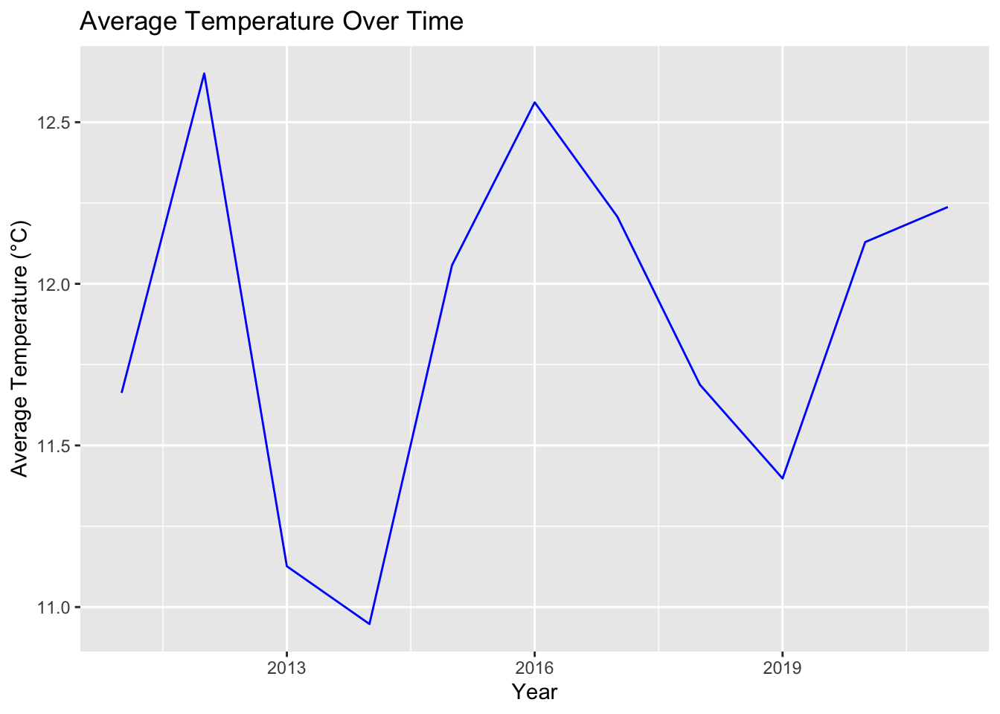
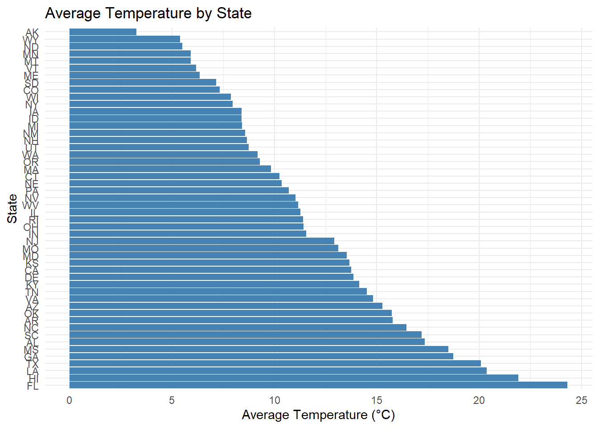

Extreme weather is on the rise due to climate change, with many, especially those who come from a lower socioeconomic background, already feeling the adverse effects changing weather patterns. Asthma is a co-morbidity for other chronic diseases and also disproportionately affects those from a lower economic status. In this project, we want to focus on asthma prevalence/incidence as hotter temperatures can lead to more pollen, air pollution, and other lung irritants. Studying these trends will help understand the health risks in vulnerable populations.
Key Questions: 1. How do asthma cases correlate with temperature extremes? 2. Are there temporal or spatial patterns in asthma prevalence?
To retrieve the temperature data, different options were explored from within the rnoaa package. meteo_pull_monitors() was first explored, but due to the number of monitors from each state, it was not realistic to pull data from each monitor to calculate the average temperature over a 10-year period. ncdc() was then investigated for use. This uses the National Climatic Data Center to access weather data and already has a TAVG variable for the average temperature. However, there were limitations as it could only gather data one year at a time and there was also issues with the API of this site. Using online resources was not realistic as datasets online were typically separated by year/month/day so getting a seasonal average was not possible. In the end, the temperature data was extracted using meteo_pull_monitors(). 30 monitors from each state were randomly selected and the daily mean of each station was found by averaging the minimum and maximum temperatures (the TAVG as reported by meteo_pull_monitors() could not be used as many stations were missing this data) for every day from 1/1/2011 to 12/31/2021 in every state. The data was then grouped by state, year, and season to find the seasonal average for every state in every year.
# Load datasets
asthma_data <- read_csv("data/asthma_data.csv")## Rows: 559 Columns: 3
## ── Column specification ────────────────────────────────────────────────────────
## Delimiter: ","
## chr (1): state
## dbl (2): year_name, prevalence_percent
##
## ℹ Use `spec()` to retrieve the full column specification for this data.
## ℹ Specify the column types or set `show_col_types = FALSE` to quiet this message.temp_data <- read_csv("data/temp_data.csv")## Rows: 2193 Columns: 4
## ── Column specification ────────────────────────────────────────────────────────
## Delimiter: ","
## chr (2): state, season
## dbl (2): year, avg_temp
##
## ℹ Use `spec()` to retrieve the full column specification for this data.
## ℹ Specify the column types or set `show_col_types = FALSE` to quiet this message.The analysis uses two primary datasets: Asthma Data and Temperature Data. The Asthma Data consists of 559 observations and 3 variables, which include details such as the date of record, the region, and the number of asthma cases reported (cases). A brief look at the first few rows reveals the following column names: year_name, state, prevalence_percent, NA, NA, providing an overview of the key information captured.
The Temperature Data contains 2193 observations and 4 variables, with key columns including the date of the temperature reading (date), the region (region), and the recorded temperature (temp). This dataset provides critical environmental context for analyzing the relationship between temperature and asthma cases.
# Summary of asthma data
asthma_summary <- asthma_data %>%
summarize(
avg_prevalence = mean(prevalence_percent, na.rm = TRUE),
min_prevalence = min(prevalence_percent, na.rm = TRUE),
max_prevalence = max(prevalence_percent, na.rm = TRUE)
)
asthma_summary## # A tibble: 1 × 3
## avg_prevalence min_prevalence max_prevalence
## <dbl> <dbl> <dbl>
## 1 9.42 6.2 13.2# Summary of temperature data
temp_summary <- temp_data %>%
summarize(
avg_temp_overall = mean(avg_temp, na.rm = TRUE),
min_temp = min(avg_temp, na.rm = TRUE),
max_temp = max(avg_temp, na.rm = TRUE)
)
temp_summary## # A tibble: 1 × 3
## avg_temp_overall min_temp max_temp
## <dbl> <dbl> <dbl>
## 1 11.9 -14.0 30.3# Average temperature by year
yearly_temp_summary <- temp_data %>%
group_by(year) %>%
summarize(
avg_temp = mean(avg_temp, na.rm = TRUE)
)
yearly_temp_summary## # A tibble: 11 × 2
## year avg_temp
## <dbl> <dbl>
## 1 2011 11.7
## 2 2012 12.7
## 3 2013 11.1
## 4 2014 10.9
## 5 2015 12.1
## 6 2016 12.6
## 7 2017 12.2
## 8 2018 11.7
## 9 2019 11.4
## 10 2020 12.1
## 11 2021 12.2# Average temperature by season
seasonal_temp_summary <- temp_data %>%
group_by(season) %>%
summarize(
avg_temp = mean(avg_temp, na.rm = TRUE)
)
seasonal_temp_summary## # A tibble: 4 × 2
## season avg_temp
## <chr> <dbl>
## 1 Fall 12.9
## 2 Spring 11.1
## 3 Summer 22.4
## 4 Winter 1.18ggplot(yearly_temp_summary, aes(x = year, y = avg_temp)) +
geom_line(color = "blue") +
labs(
title = "Average Temperature Over Time",
x = "Year",
y = "Average Temperature (°C)"
)
ggplot(seasonal_temp_summary, aes(x = season, y = avg_temp, fill = season)) +
geom_bar(stat = "identity") +
labs(
title = "Average Temperature by Season",
x = "Season",
y = "Average Temperature (°C)"
)# Temperature by state
state_temp_summary <- temp_data %>%
group_by(state) %>%
summarize(
avg_temp = mean(avg_temp, na.rm = TRUE)
)
ggplot(state_temp_summary, aes(x = reorder(state, -avg_temp), y = avg_temp)) +
geom_bar(stat = "identity", fill = "steelblue") +
coord_flip() +
labs(
title = "Average Temperature by State",
x = "State",
y = "Average Temperature (°C)"
)